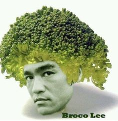
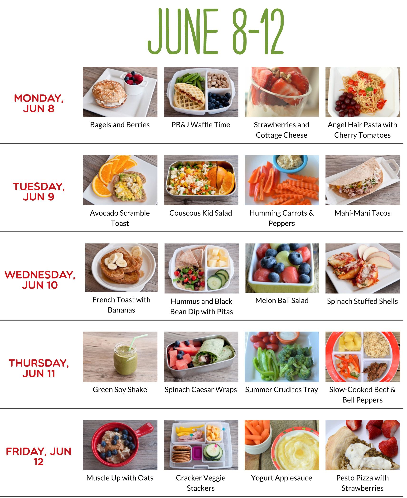

The original Bruce Lee Diet article, by Jon Wade
Generally Bruce Lee avoided refined flour. So, he did not eat many baked foods such as biscuits and cakes, which he described as being empty calories. It is worth mentioning that today many people attribute irritable bowel syndrome to the excess consumption of refined flours. His philosophy was not to consume calories that did not provide some benefit to the body.
Bruce Lee enjoyed Chinese food, as he felt that western food was often too bland. Some of his favourite Chinese dishes were beef in oyster sauce and tofu. However, he loved to eat steak and liver too, but overall preferred the more balanced approach of Asian dishes. He felt that often Western food placed too much emphasis on protein and fat and not enough on carbohydrates from vegetables, rice, pasta etc
Bruce Lee did not like dairy food, and only ate dairy as part of protein drinks, usually using powdered milk instead of fresh milk. This rule only helps to reduce total energy intake. Calcium from dairy has been found to help reduce the amount of fat that is digested.
Bruce Lee consumed one or two protein drinks every day, plus fruit smoothies too. Although his protein drinks varied, they generally consisted of:
Bruce Lee also took many mineral and vitamin supplements. Today there is a much greater variety of supplements on offer than there were when Bruce Lee was training. Knowledge about how different supplements interact and benefit us has advanced a great deal since the 1960’s, as a result there may be better and more efficient supplements available than the ones listed below. However, here are some of the supplements Bruce Lee is known to have taken:
Obviously Bruce Lee’s diet would have varied greatly during the 1960’s and early 1970’s as his training methods evolved, but here is what is possibly one of his typical days meals:
